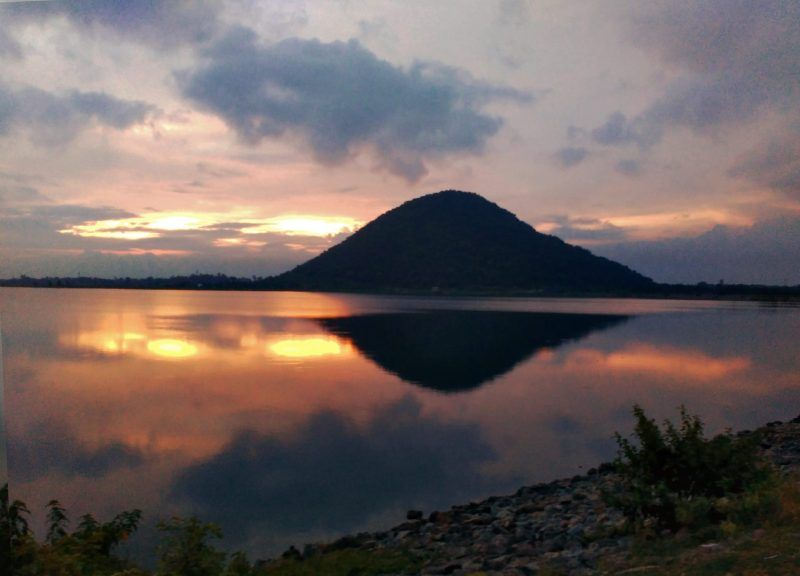
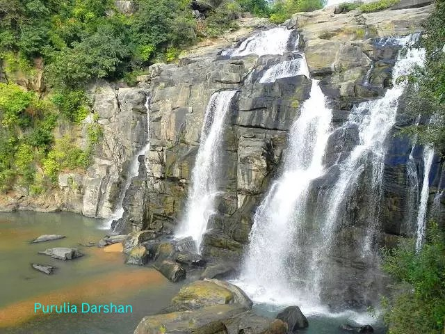
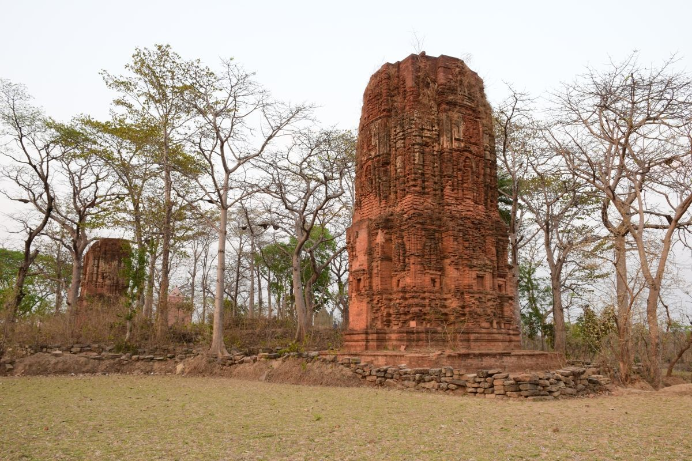
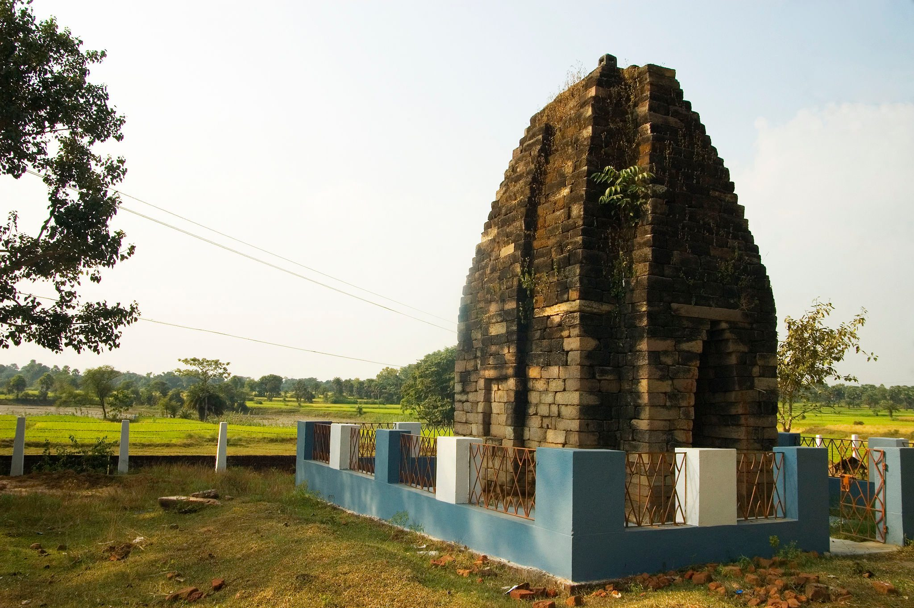
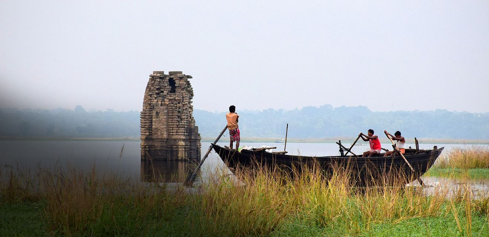
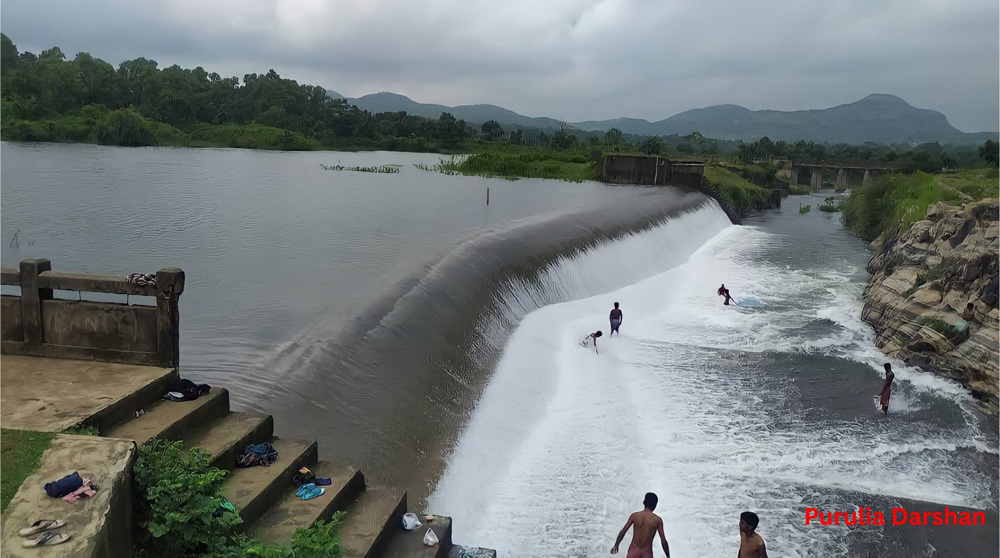
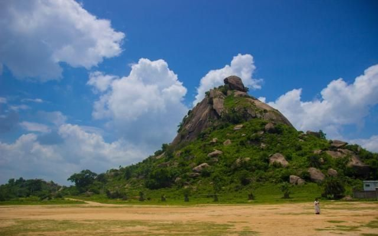

Hills
Baghmundi, Purulia
Hills
Baghmundi, Purulia
Ayodhya Hills
The crown jewel of Purulia tourism. Famous for dense Sal forests, trekking routes, Upper & Lower Dams, and panoramic viewpoints.

From misty hills and tranquil lakes to roaring waterfalls and thousand-year-old temples — discover the hidden gems of Purulia.
Hills
Baghmundi, Purulia
The crown jewel of Purulia tourism. Famous for dense Sal forests, trekking routes, Upper & Lower Dams, and panoramic viewpoints.

Lake & Dam Santuri, PuruliaA tranquil reservoir nestled between Muradi and Baranti hills, renowned for breathtaking sunset reflections and Palash blooms in spring.

Waterfall Ayodhya Hills, PuruliaA spectacular multi-tiered waterfall cascading over giant boulders amidst lush green forests near Baghmundi.

Heritage Temple Jaipur, Purulia10th-century brick-built Rekha Deul temples adorned with intricate stucco carvings along the scenic banks of River Kansai.

Heritage Temple Puncha, PuruliaA remarkable archaeological complex housing ancient stone shrines and rare sculptures of Jain Tirthankaras.

Heritage Temple Raghunathpur, PuruliaKnown as the mysterious submerged temple town on the Damodar river bed, emerging visibly when water levels recede in summer.

Lake & Dam Jhalda, PuruliaA serene dam at the northern foothills of Ayodhya hills near Jhalda, offering peaceful nature stays and tribal village walks.

Hills Raghunathpur, PuruliaFamous rock-climbing center and iconic filming spot of Satyajit Ray's 'Hirak Rajar Deshe', topped with a scenic hilltop temple.
Try searching with a different keyword or select "All Places".
Book our customized Purulia Circuit Tour packages with comfortable cab, local guide, and hotel stay.